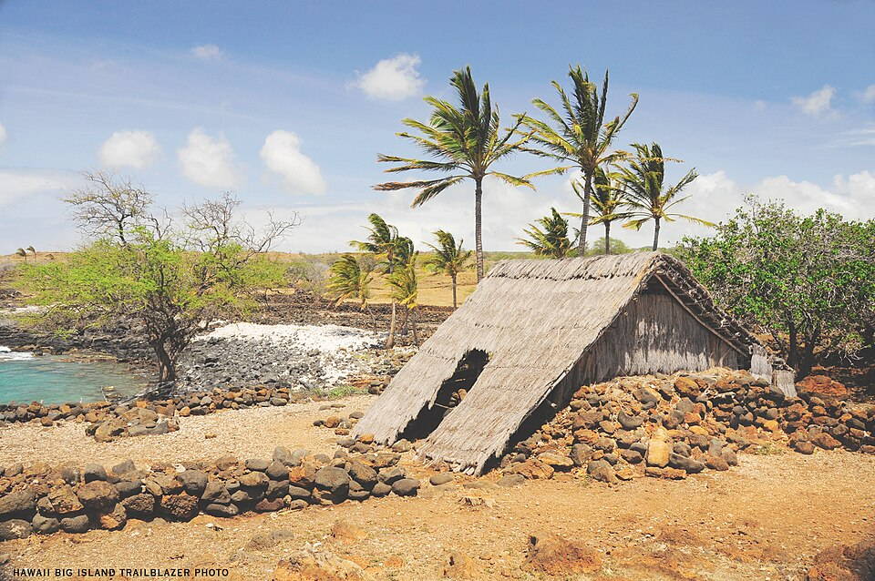

Lapakahi State Historical Park
Place: Lapakahi State Historical Park, North Kohala, Hawaiʻi Island
Type: Ancient Hawaiian fishing village / archaeological park
Namesake: The ahupuaʻa of Lapakahi, meaning "single ridge," describing the traditional land division stretching from the Kohala mountains to the sea
Story it tells: How a thriving Hawaiian fishing village flourished for nearly 600 years before dwindling in the plantation era, leaving behind one of the best-preserved archaeological windows into everyday life in ancient Hawaiʻi.

Lapakahi State Historical Park protects one of the oldest and best-preserved ancient Hawaiian fishing villages in the islands. Sitting along the dry, rocky North Kohala coast, the village occupies the ahupuaʻa of Lapakahi, whose name means "single ridge." Like every traditional ahupuaʻa, it stretched from the upland forests to the sea, allowing families to gather resources from multiple ecological zones. Crops and timber from the Kohala mountains could be exchanged for fish, salt, and other coastal resources, creating a self-sustaining community.
Archaeological evidence indicates that the first permanent settlement was established around the thirteenth century, when growing populations on Kohala's wetter windward slopes expanded into the drier leeward coast. Native Hawaiians developed a thriving community by carefully managing every available resource. Families cultivated sweet potatoes and gourds, gathered salt from coastal pans, and leaned on the rich fisheries offshore. The reef and coastline provided fish, shellfish, and seaweed, to sustain the community.
Visitors walking the park's one-mile self-guided trail encounter the foundations of a complete Hawaiian coastal village. Stone house platforms mark where generations of families once lived, while reconstructed thatched hale help illustrate traditional architecture. The village also contains canoe sheds, family shrines (mua), fishing shrines (kuʻula), salt-making areas, and papamū, stone game boards carved into the lava where residents played the strategy game kōnane.
Lapakahi is unique in that it tells the story of ordinary people. The archaeological remains preserve the homes, workplaces, and sacred spaces of fishermen and their families, offering one of the clearest windows into everyday life in pre-contact Hawaiʻi. It is this completeness that makes Lapakahi one of the state's most significant archaeological sites.
Much of what is known about the village comes from archaeological excavations conducted between 1968 and 1970 by University of Hawaiʻi archaeologists Richard Pearson and Roger Green. Using radiocarbon dating, excavation of ancient hearths and refuse deposits, and analysis of thousands of fishhooks, stone tools, coral files, and agricultural features, it was determined that the settlement had been continuously occupied for nearly six centuries.
The village slowly declined during the nineteenth and early twentieth centuries as Hawaiʻi underwent dramatic social and economic change. Introduced diseases reduced the Native Hawaiian population, while sugar plantations and growing towns offered new employment opportunities. However, the most impactful reason for gradual abandonment was the village's brackish wells gradually slowed and eventually stopped providing after water diversion for plantation agriculture higher on the Kohala slopes dropped the local water table. Without a reliable source of fresh water, maintaining a permanent settlement became increasingly difficult, and the last residents moved away around the time of World War I.
Ironically, the same harsh environment that made Lapakahi difficult to inhabit ultimately ensured its preservation. The rocky coastline lacked the water needed for sugar cultivation, the jagged lava fields offered little value for cattle ranching, and Koaiʻe Cove was too shallow to become a commercial harbor like nearby Māhukona and Kawaihae. While much of Hawaiʻi was transformed by plantations, ranches, resorts, and residential development, Lapakahi remained largely untouched because it held little commercial value.
The land's ownership also contributed to its survival. Following the Great Māhele of 1848, most of the Lapakahi ahupuaʻa remained Government Land under the Hawaiian Kingdom. Native Hawaiian families continued living there under traditional kuleana rights, gathering resources and fishing the shoreline with little interference bythe government. After the overthrow of the monarchy, the land passed through the Territory of Hawaiʻi and eventually to the State of Hawaiʻi, remaining largely overlooked for decades until archaeologists recognized its extraordinary cultural significance.
Recognizing that one of Hawaiʻi's most intact ancient villages had survived almost by accident, the state listed Lapakahi on the National Register of Historic Places in 1973 and later established Lapakahi State Historical Park. The surrounding waters were subsequently protected as the Koaiʻe Marine Life Conservation District, preserving both the archaeological landscape on land and the marine ecosystem that supported the village for centuries.
Today, Lapakahi offers something increasingly rare in Hawaiʻi: the opportunity to walk through an ancient Hawaiian community much as it was left by its final residents. The village's remarkable preservation allows visitors to visualize how families organized their homes, practiced their religion, harvested food, launched canoes, and adapted to one of the island's driest coastlines. Rather than telling the story of kings or battles, Lapakahi preserves the daily rhythms of ordinary Hawaiians whose lives formed the foundation of island society for hundreds of years.